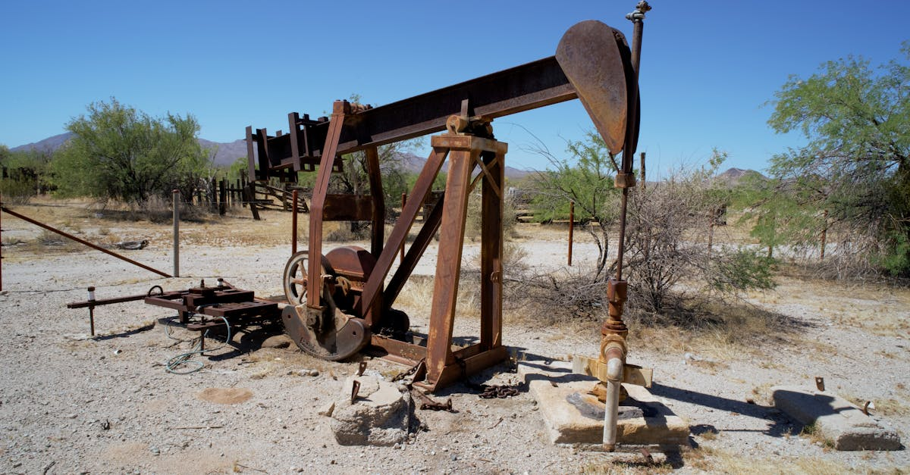

L'ingéniosité américaine face aux défis énergétiques
L'histoire des États-Unis est intrinsèquement liée à sa capacité à innover et à surmonter des obstacles apparemment insurmontables, particulièrement dans le domaine de l'énergie. Le secteur pétrolier américain, souvent qualifié d'« homme du pétrole américain », incarne cette résilience. Pourtant, comme le souligne Jack McClendon, recréer un nouveau « boom » pétrolier n'est pas une simple formalité. Les conditions économiques, technologiques et géologiques d'aujourd'hui diffèrent radicalement de celles des précédentes périodes d'expansion spectaculaire. On pourrait être tenté de croire que la simple volonté suffit, mais la réalité du marché mondial et les contraintes physiques imposent des limites. L'idée d'un « âge d'or » pétrolier facilement réplicable relève parfois d'une nostalgie séduisante, mais trompeuse. Les avancées technologiques, bien que remarquables, doivent composer avec des réserves plus difficiles d'accès et des coûts d'extraction croissants. Les investisseurs, qu'ils soient novices ou expérimentés, doivent comprendre ces nuances. Dans un monde où l'information circule à la vitesse de la lumière, il est crucial de ne pas se fier aux apparences. L'optimisation des stratégies d'épargne, par exemple, ne peut se faire sans une analyse approfondie des secteurs porteurs et des risques associés. C'est là qu'interviennent des outils capables de traiter cette complexité, offrant une perspective plus objective que la seule intuition humaine. Le défi n'est donc pas seulement de trouver du pétrole, mais de le faire de manière économiquement viable et durable, dans un contexte de transition énergétique mondiale.
👉 À lire : Carburant Australie: Le plein est fait, la sérénité revient

Les leçons du passé : cycles et innovations
Chaque boom pétrolier américain, qu'il s'agisse de Spindletop en 1901 ou des révolutions du gaz de schiste plus récemment, a été le fruit d'une combinaison unique de facteurs. L'innovation technologique, comme la fracturation hydraulique et le forage horizontal, a joué un rôle déterminant, permettant d'exploiter des ressources auparavant inaccessibles. Cependant, ces avancées ne surgissent pas dans le vide. Elles sont souvent le résultat d'années de recherche, d'investissements considérables et d'une prise de risque calculée par des entrepreneurs audacieux. McClendon insiste sur le fait que l'« homme du pétrole américain » n'est pas seulement un prospecteur, mais un ingénieur, un financier et un stratège. Les cycles de boom et de bust sont une constante dans cette industrie. Les périodes de prix élevés encouragent l'investissement et l'innovation, menant à une augmentation de la production. Cette surabondance fait ensuite chuter les prix, entraînant des faillites et une consolidation du secteur, jusqu'à ce que la demande rattrape à nouveau l'offre et que le cycle recommence. Comprendre ces cycles est essentiel pour tout investisseur. Ignorer l'histoire, c'est se condamner à répéter les mêmes erreurs. Pour ceux qui cherchent à faire fructifier leur capital, la diversification et une analyse prévisionnelle rigoureuse sont primordiales. Les outils d'analyse basés sur l'intelligence artificielle peuvent aider à identifier les tendances émergentes et à anticiper les retournements de marché, bien avant qu'ils ne deviennent évidents pour le commun des mortels. Il ne s'agit pas de prédire l'avenir avec certitude, mais de construire des stratégies résilientes face à la volatilité inhérente aux marchés des matières premières.
👉 À lire : Pétrole : Les tensions à Hormuz font flamber les prix
Les obstacles contemporains : coûts, régulation et demande
Aujourd'hui, les conditions pour un nouveau boom pétrolier sont bien moins favorables. Les gisements les plus faciles et les moins coûteux à exploiter ont été largement développés. Les nouvelles découvertes se font souvent dans des environnements plus extrêmes (eaux profondes, Arctique) ou nécessitent des technologies d'extraction plus complexes et donc plus coûteuses, comme le pétrole des sables bitumineux ou certaines formations de schiste moins productives. Le coût de production moyen a donc tendance à augmenter. Parallèlement, la pression réglementaire s'intensifie. Les préoccupations environnementales, les objectifs de réduction des émissions de gaz à effet de serre et les politiques favorisant les énergies renouvelables créent un cadre de plus en plus contraignant pour l'industrie des combustibles fossiles. Même si le pétrole reste essentiel à l'économie mondiale actuelle, les investissements dans de nouveaux projets d'exploration et de production à long terme sont devenus plus risqués. La demande elle-même est sujette à incertitude. La transition énergétique, bien que progressive, vise à terme à réduire notre dépendance aux hydrocarbures. Les constructeurs automobiles électrifient leurs gammes, les pays investissent massivement dans les énergies solaires et éoliennes. Qui peut dire avec certitude quelle sera la demande de pétrole dans 10, 20 ou 30 ans ? Cette incertitude pèse sur les décisions d'investissement. Face à cette complexité, l'analyse des données massives et l'utilisation d'algorithmes prédictifs deviennent des atouts considérables pour naviguer dans ces eaux troubles. Comprendre la dynamique de l'offre et de la demande, anticiper les évolutions réglementaires et évaluer la rentabilité des projets dans ce contexte changeant est un défi qui dépasse la simple intuition. C'est une tâche idéale pour des systèmes capables d'analyser des milliers de variables simultanément.
L'importance de la technologie et de l'innovation continue
Malgré ces obstacles, il serait imprudent de parier contre l'ingéniosité américaine. L'histoire nous a montré que lorsque les incitations sont suffisamment fortes, l'industrie trouve des solutions. L'amélioration continue des techniques de forage, l'optimisation des processus d'extraction, le développement de nouvelles méthodes de récupération assistée (EOR - Enhanced Oil Recovery) sont autant de pistes explorées. La digitalisation et l'intelligence artificielle jouent déjà un rôle croissant. Des algorithmes analysent les données sismiques pour identifier les prospects les plus prometteurs, optimisent les trajectoires de forage pour maximiser la production, et surveillent les équipements pour prévenir les pannes coûteuses. L'IA peut même aider à modéliser les flux souterrains et à optimiser la gestion des réservoirs sur leur durée de vie. On parle de « pétrole intelligent », où chaque goutte extraite l'est grâce à une analyse de données poussée. Ces technologies permettent de repousser les limites de la rentabilité, même dans des conditions difficiles. Pour un investisseur, comprendre le potentiel de ces technologies est crucial. Il ne s'agit plus seulement d'investir dans des entreprises pétrolières, mais dans des entreprises qui maîtrisent ces outils d'optimisation et d'innovation. C'est un peu comme choisir entre acheter une vieille voiture ou une voiture électrique dernier cri ; le potentiel de performance et la pérennité ne sont pas les mêmes. L'épargne intelligente consiste à identifier ces tendances technologiques qui redéfinissent des secteurs entiers, y compris ceux qui semblent traditionnels.
La perspective de l'investisseur : diversification et IA
Dans le contexte actuel, caractérisé par une volatilité accrue et une transition énergétique en cours, la stratégie d'investissement dans le secteur de l'énergie doit être particulièrement prudente et éclairée. Parier sur un nouveau boom pétrolier à l'ancienne manière semble risqué. McClendon lui-même suggère que l'on ne devrait jamais parier contre l'ingéniosité américaine, mais cela ne signifie pas ignorer les réalités économiques et environnementales. Pour l'investisseur individuel, cela implique une diversification accrue de son portefeuille. Il ne s'agit plus de concentrer ses mises sur un seul type d'actif ou un seul secteur. L'énergie est un domaine complexe, et même au sein de ce secteur, il existe une multitude d'opportunités et de risques. Investir dans des entreprises qui développent des technologies de capture du carbone, ou celles qui sont à la pointe de l'efficacité énergétique, pourrait être aussi pertinent, voire plus, que de miser sur les producteurs traditionnels. C'est là que l'intelligence artificielle devient un outil précieux. Les plateformes d'investissement automatisé, propulsées par l'IA, sont capables d'analyser en temps réel des volumes de données considérables, provenant de sources multiples : rapports financiers, actualités géopolitiques, données environnementales, avancées technologiques. Elles peuvent identifier des corrélations subtiles, évaluer des risques complexes et proposer des allocations d'actifs optimisées, 24h/24. Cette capacité d'analyse continue et objective est un avantage considérable pour l'épargnant moderne qui cherche à naviguer dans la complexité des marchés financiers, y compris ceux liés à l'énergie.

L'enjeu de la transition énergétique et l'avenir du pétrole
La question d'un nouveau boom pétrolier ne peut être dissociée de celle de la transition énergétique. Les gouvernements, les entreprises et les consommateurs sont de plus en plus conscients de l'urgence climatique. Les investissements dans les énergies renouvelables explosent, les véhicules électriques gagnent du terrain, et les politiques visent à réduire la dépendance aux combustibles fossiles. Dans ce contexte, même si le pétrole restera nécessaire pendant encore plusieurs décennies pour certaines applications (industrie pétrochimique, aviation, transport maritime), sa demande future est sujette à une incertitude structurelle. Les projets pétroliers à très long terme, nécessitant des décennies pour être développés et amortis, deviennent intrinsèquement plus risqués. Les investisseurs avisés doivent donc considérer le risque d'actifs échoués (« stranded assets ») – des réserves de pétrole qui ne pourront jamais être exploitées économiquement en raison de changements réglementaires ou de la baisse de la demande. L'« homme du pétrole américain » est ingénieux, certes, mais il doit aussi s'adapter à ce nouveau paradigme. Cela pourrait signifier une réorientation vers des sources d'énergie plus propres, ou une focalisation sur l'efficacité et la réduction des émissions dans les opérations existantes. Pour l'épargnant, cela souligne l'importance de ne pas mettre tous ses œufs dans le même panier. Une stratégie d'investissement qui intègre une vision à long terme, tenant compte des mégatendances mondiales comme la transition énergétique, est essentielle. Les outils d'IA peuvent aider à modéliser ces scénarios futurs et à ajuster les portefeuilles en conséquence, assurant une optimisation continue face à un avenir incertain.
Conclusion : L'optimisation intelligente face à l'incertitude
L'analyse de Jack McClendon sur la difficulté de créer un nouveau boom pétrolier américain met en lumière les complexités inhérentes aux marchés des matières premières et, par extension, à l'ensemble des marchés financiers. Si l'ingéniosité américaine est une force indéniable, elle doit composer avec des réalités technologiques, économiques et environnementales changeantes. Les leçons tirées de l'histoire des cycles pétroliers rappellent l'importance de la prudence, de la diversification et de l'analyse approfondie pour tout investisseur. Dans un monde où l'incertitude est la seule constante, s'appuyer uniquement sur l'intuition ou sur des données dépassées est une recette pour l'échec. L'avènement de l'intelligence artificielle offre une nouvelle approche. Les agents IA capables d'analyser en permanence des flux d'informations massifs, d'identifier des schémas complexes et d'optimiser les stratégies d'épargne et de placement 24h/24, représentent une avancée majeure. Ils permettent de naviguer dans la complexité, d'anticiper les tendances et de construire des portefeuilles résilients, mieux adaptés aux défis d'aujourd'hui et de demain. Que ce soit dans le secteur pétrolier ou dans tout autre domaine, l'épargne intelligente et l'investissement automatisé par IA offrent une voie prometteuse pour faire fructifier son capital dans un environnement en constante évolution. Ne pariez jamais contre l'ingéniosité, mais assurez-vous qu'elle soit soutenue par les outils d'analyse les plus performants.